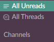
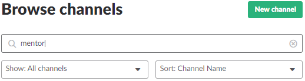
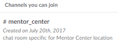
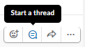
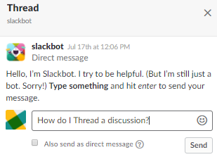
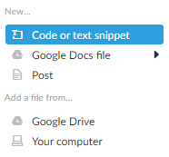
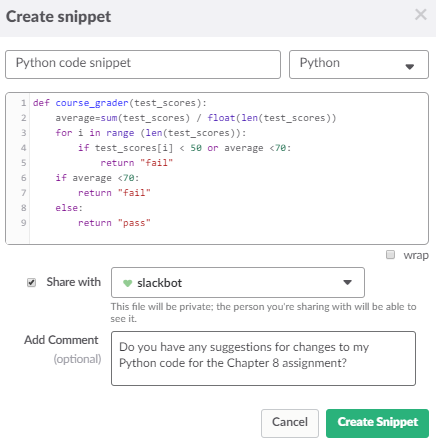

Communicating in LC101 using Slack
Slack is an instant-messaging application that fosters team collaboration through online discussion.
The three breif tutorials that follow will help you to use Slack's features to communicate efficiently with LC101 teaching fellows and classmates.
Topics:
Joining a Channel
During each unit of LC101, participants will be grouped with a new teaching fellow for in-class assignment discussion and completion. Joining a teaching fellow's Slack channel is a good way to ask questions of the teaching fellow, share helpful links with classmates, and troubleshoot problems that others might encounter.
How to join a channel in Slack:
- On the navigation menu at the left of the screen, click Channels, which will open the Browse channels searchable list.
 - Type the first few letters of the name of the group you would like to join to reveal a list of matching channels.
 - Click the name of the channel you wish to join.
 - At the bottom of the screen, click the Join Channel button.
Now you are ready send and receive messages with members of the channel.
Creating a Discussion Thread
Now that you have joined channels, you should learn how to respond to others using message threads. Multiple people can have multiple conversations simultaneously, so using threads nests relevant responses beneath the original message. This approach will help you to better organize discussions and avoid confusion when there are replies to several topics.
How to create a discussion thread in Slack:
- Hover over a message you would like to respond to, which will reveal four useful icons.
- Click the Start a thread icon.
 - Compose a response to the message you have chosen, and then click Send.

Note: As with other messages, you can also include emojis.
Notice how this threaded message and others like it are neatly organized beneath the original message, creating a clear flow of discussion. Other readers in the channel are more likely to see responses you post that would be relevant to the topic they are interested in viewing.
Uploading a Code Snippet
At times when you are programming, you might be stuck and in need of assistance from a teaching fellow. You could send a screen capture of your code for review, but a better approach is to send a "snippet" of code. If sent as a snippet, the viewer can copy and paste that code and test it in an application. This method of sharing code is easy to view and helps to properly display code for the person you will ask to review it. In other words, it will be quicker and less frustrating for all.
How to send a code snippet in Slack:
- Click the plus sign button on the message box.
- On the menu that appears, click Code or text snippet, which will open the Create snippet window.
 - Type a message title and choose the programming language you are using.
- Copy and paste the code from its original source into the window.
- Add a comment to clarify your question, and then click Create Snippet.

When code is submitted as a snippet in Slack, you will see that it is displayed properly; for example, Python's indentation is properly formatted for improved readability. Viewers will appreciate that they can expand code for review and easily provide feedback.